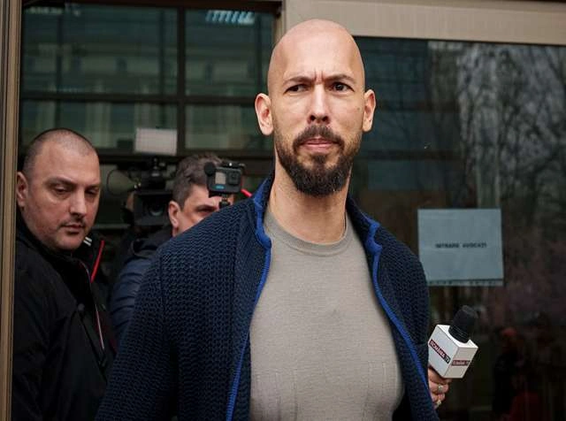

The Independent Office for Police Conduct has formally started a big investigation into how Hertfordshire Police acted when they worked with famous influencer Andrew Tate in the past.This news comes after a number of disturbing discoveries about how sexual abuse charges against Andrew Tate were handled in 2019. The national watchdog is now looking into these claims very closely.The Andrew Tate police probe is a turning point for the UK court system and the local authorities involved in the initial case as the public expects more accountability for how sensitive allegations are handled.

Looking into how sexual abuse claims were handled in 2019
The way Hertfordshire Police handled reports made by multiple women between 2015 and 2019 is at the center of the current scandal.Even though the accusations of sexual violence and coercive control were very serious, the first files were closed without any charges being filed more than four years ago.The IOPC is looking into how UK police handled the situation to see if officers didn't follow the right procedures or if there were problems with how evidence was collected.The Crown Prosecution Service is also looking over its old decisions at the same time that it is looking over these archives again.
Whistleblowers brought up problems with how things were going inside the company
Whistleblowers who were worried about the honesty of the first detective work helped this fresh investigation get off the ground.According to internal sources, a former detective constable may now be facing gross misconduct charges for not adequately looking into the reports from 2015.In addition, two detective sergeants who were in charge of the case are also being looked at.These internal revelations have formed a picture of an investigation that may have been impeded by administrative carelessness or a lack of investigative rigor, leaving the complainants without the legal conclusion they sought for years.
The Human Impact and the Road to Responsibility
For the women who came forward almost ten years ago, the fact that the IOPC is looking into Hertfordshire Police gives them a long-awaited sense of validation.The claimants' lawyers have said that their clients merely wanted a fair and thorough look at the evidence they gave.As a civil trial about these identical claims is set to begin in the summer of 2026, the results of this police watchdog investigation will probably be very important.This investigation's results should set a standard for how UK forces deal with reports of previous abuse against public individuals and make sure that whistleblower concerns are never ignored.